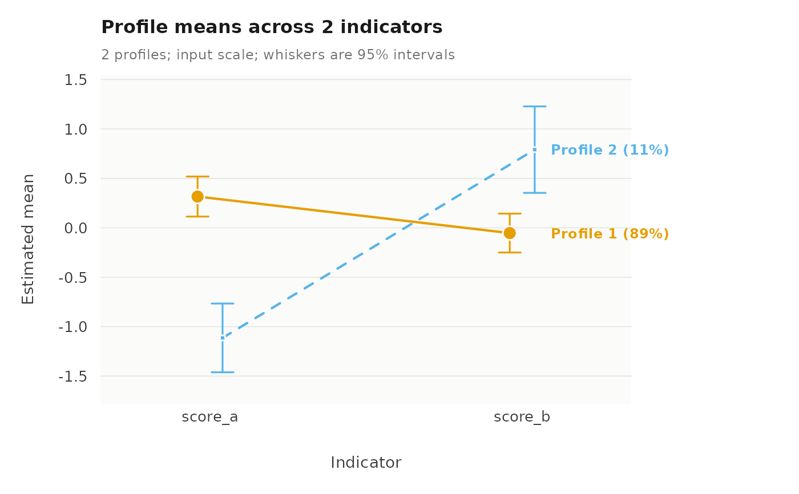

Draws one view of a fit as a ggplot object, which can be printed, saved
with ggplot2::ggsave() or styled further with + ggplot2::theme().
Every view shares one profile order (largest first), one profile share (the
posterior share every table reports) and one set of Okabe-Ito colours
paired with point shapes, so a profile looks the same in every view.
Series are labelled directly rather than through a legend.
Usage
# S3 method for class 'multilpa'
plot(
x,
what = c("profiles", "bars", "heatmap", "raincloud", "parallel", "pairs", "responses",
"probabilities", "sequences", "sizes", "entropy", "posteriors", "avepp", "all"),
data = NULL,
scale = c("raw", "standardized"),
category = "last",
labels = TRUE,
intervals = TRUE,
cell_labels = TRUE,
main = NULL,
subtitle = NULL,
...
)Arguments
- x
A fitted
multilpamodel.- what
Which view to draw.
plot_views()lists every value with its group and a one-line description.The measurement model:
"profiles"draws one line per profile across the continuous indicators."bars"draws the same means as grouped bars that start at zero."heatmap"draws them as a diverging grid of observed standard deviations from each indicator's observed mean, the quickest read when there are many indicators or profiles; for a fit whose indicators are all categorical it draws the response probabilities instead."raincloud"shows what the means summarize: for the cases assigned to each profile, a density, the quartiles and the observations of each indicator."parallel"draws every case as a line across the indicators, one panel per profile, faded by the certainty of its assignment."pairs"draws a scatter-plot matrix of the indicators with each profile's 95% ellipse from the fitted covariances, the view that shows the covariance structure."responses"is the categorical counterpart of"profiles": one line per profile, showing the probability of a chosen category.The two-level structure:
"probabilities"plots profile prevalence within each group class."sequences"draws one row per group and one column per position, filled with the assigned profile; it needs a fit made withtime =.Classification:
"sizes"draws each profile's effective count, the posterior mass it carries."posteriors"draws the posterior probability of each case's assigned profile and"entropy"each case's entropy relative to a flat posterior, one strip per profile with its mean marked. A one-profile fit refuses both with an error of classlatents_nothing_to_plot."avepp"draws the average posterior probability matrix: rows are assigned profiles, columns profiles, and the diagonal is the avePP usually reported."all"returns every view the fit has the ingredients for.- data
Optional. The data frame the model was fitted to. A fit carries the columns it was built from, so intervals are drawn without it; pass it only to compute them from a different frame.
- scale
For the mean views and
"raincloud","raw"keeps each indicator in its input units and"standardized"divides its deviation from the observed mean by its observed standard deviation, the same map asas.data.frame(scale = "standardized").- category
For
what = "responses", which category's probability to plot:"last","first", or a single category label or index.- labels
TRUElabels each series at its right end;FALSEuses a legend instead.- intervals
For
"profiles"and"responses",TRUEdraws 95% intervals when the fit has standard errors (a probability's is clipped to[0, 1]). A fit without them is drawn without whiskers and its subtitle says why.- cell_labels
For
what = "sequences",TRUEprints the profile number in each cell while the grid is sparse enough to hold one, so the profile is not carried by colour alone.- main, subtitle
Title and subtitle.
NULLuses the view's own.- ...
Nothing further is accepted; an unknown argument raises an error of class
latents_bad_argument. Style the returned plot with ggplot2.
Value
A ggplot object; for what = "all", a latents_plots list of them,
named by view, that draws every one when printed.
Details
The plots need the ggplot2 package, which latents suggests rather than
requires; without it a plot is refused with an error of class
latents_missing_package.
"profiles" and "bars" draw 95% Wald intervals when the fit has
standard errors. Profile numbers are arbitrary, so two fits must have
their labels aligned before their plots are compared. With
scale = "standardized" the standard deviations are the observed
indicator standard deviations, not the within-profile ones, so the values
are comparable across indicators but are not effect sizes.
Errors
latents_missing_package without ggplot2;
latents_no_continuous, latents_no_categorical, latents_no_time and
latents_nothing_to_plot when the fit lacks what a view needs;
latents_bad_argument for an argument the method does not use.
References
Zappia, L. and Oshlack, A. (2018). Clustering trees: a visualization for evaluating clusterings at multiple resolutions. GigaScience, 7(7), giy083.
See also
plot_views() for the catalogue of views.
Examples
if (requireNamespace("ggplot2", quietly = TRUE)) {
set.seed(7)
example_data <- data.frame(
school = rep(seq_len(12), each = 10),
score_a = rnorm(120), score_b = rnorm(120)
)
fit <- multilpa(example_data, c("score_a", "score_b"), "school",
n_profiles = 2, n_group_classes = 1, n_starts = 2)
plot(fit)
plot(fit, scale = "standardized")
plot(fit, what = "bars")
plot(fit, what = "pairs")
plot(fit, what = "avepp")
}
